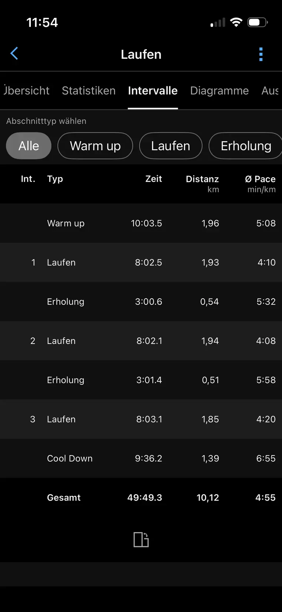
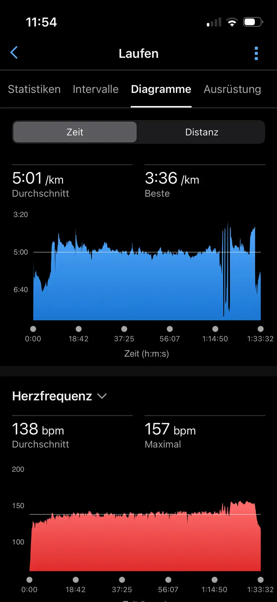
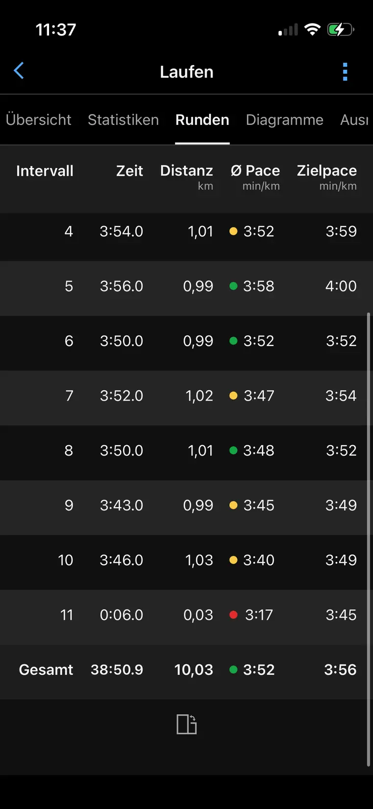

Forstenrieder Volkslauf · 85.8 kg · VO₂max 47
← All case studies
LONGITUDINAL CASE STUDY · 2023–2026
From roughly 52 minutes to sub-39.
Not a six-week transformation. A three-year accumulation.
One original goal, uneven early progress, a substantial but non-linear weight reduction, increasingly specific threshold and interval work, and a short final block that converted existing aerobic fitness into a controlled 10-km race.

- ≈52:00
- starting point
- 38:50.9
- Garmin lap total · 10.03 km
- −11.5 kg
- late 2023 to race day
- ≈49 → 59.9
- Garmin VO₂max estimate

THE STARTING POINT
“I want to improve my 10-km time from roughly 52 minutes to under 40.”
Alexander Büttner · 2 December 2023
The nearest connected body-mass measurement was 84.4 kg. Garmin’s estimated VO₂max was around 49. An October 2023 training run had already dipped below 50 minutes, but the April 2024 Forstenrieder race returned 52:07. The early story was not linear — fitness existed, repeatability did not.
THE STRONGEST FINDING
The lowest body mass did not produce the fastest result. Alex weighed 70.7 kg in October 2025 and 72.9 kg on the March 2026 race day. Performance still improved. Weight mattered; it was not the whole explanation.
THE PROGRESSION
The curve changed shape in 2025.
The markers below combine connected Garmin/Runalyze activities with a manually maintained race overview. Times marked as normalized are derived from the recorded pace or distance rather than an official 10.00-km result.
Lower is faster. October 2025 is a normalized 10-km marker from the Munich Marathon relay. March 2026 shows Garmin’s lap total; the synced activity records 38:56 over 10.06 km.
Tegernsee 10-km leg · 84.4 kg · 143 m ascent
Run4Kids Habach · 81.9 kg · VO₂max 52
Forstenrieder Volkslauf · 79.0 kg · 10.06 km
Munich relay · 71.5 kg · recorded pace 3:57/km
Forstenrieder Volkslauf · 72.9 kg · average pace 3:52/km
WHAT CHANGED
Less “just running.” More deliberate specificity.
During 2025 and early 2026, activity titles begin to show repeatable threshold work, 800-m and 1,000-m repetitions, strides, and long runs with controlled faster endings.
THRESHOLD · 3 MARCH 2026
3 × 8 minutes: controlled, repeatable pressure.
Three work blocks at approximately 4:10, 4:08, and 4:20/km, separated by three-minute jog recoveries. Total: 10.12 km in 49:49, average heart rate 145 bpm, maximum 164 bpm.

LONG RUN · 7 MARCH 2026
Build the finish before asking for it on race day.
18.66 km in 1:33:33: 70 minutes in Z2, four strides, then 2.27 km in 10:23 at 4:35/km. Average heart rate stayed at 138 bpm; maximum was 157 bpm.

THE FINAL SIX WEEKS
A short sharpening block on top of years of base work.
Total running volume was 185.6 km, averaging 30.9 km/week. The last three weeks were around 40 km including race-week warm-up and race distance.
| Week | Km / runs | Key work |
|---|---|---|
| KW07 | 10.1 / 1 | Bridge week; easy 10 km, cycling in the background |
| KW08 | 26.0 / 3 | Easy, steady, and progressive running |
| KW09 | 27.8 / 3 | Three steady aerobic runs |
| KW10 | 43.9 / 4 | 3 × 8 min threshold; progression; 18.66-km long run |
| KW11 | 40.0 / 4 | 5 × 4 min; 6 × 1 min; strides; faster long-run finish |
| Race week | 37.9 / 5 | 2 × 10 min; 5 × 2 min; easy + strides; warm-up + race |
Context matters: this block sharpened an athlete who already had years of running, cycling, strength work, and a near-sub-40 relay performance. It is descriptive, not a universal template.
RACE DAY
Restraint first. Then a progressively faster close.
Garmin’s lap total records 10.03 km in 38:50.9 at 3:52/km. The synced activity records 10.06 km in 38:56, average heart rate 159 bpm and maximum 165 bpm.
KM 1–34:01 · 4:02 · 4:01
Open below the red line and protect the second half.
KM 4–63:52 · 3:58 · 3:52
Settle around target rhythm without forcing the pace.
KM 7–103:47 · 3:48 · 3:45 · 3:40
Convert remaining capacity into a sustained acceleration.
WHY IT WORKED
The execution matched the training: threshold control first, progressively faster running under fatigue second. The finish was rehearsed strength, not an opening-pace gamble.

HOW TO REPRODUCE THE LOGIC
Adapt the method. Do not copy the workload.
A runner at approximately 52 minutes should not jump directly into multiple quality sessions and 40-km weeks. A safer reconstruction has two stages.
PLAN A · FOUNDATION
From roughly 52 minutes toward consistent training.
Use this stage until three runs per week feel routine, a 75-minute easy run is comfortable, and there is no current pain that changes gait.
| Block | Volume | Running focus | Support |
|---|---|---|---|
| Weeks 1–4 | 3 runs · 18–25 km | Two conversational easy runs; long run 55–70 min | Two short strength sessions; 4–6 relaxed strides weekly |
| Weeks 5–8 | 3–4 runs · 24–32 km | Add 3 × 6 min controlled threshold every 7–10 days | Long run 70–80 min; easy cycling can replace an easy run |
| Weeks 9–12 | 4 runs · 28–36 km | Alternate 3 × 8 min threshold with 5 × 3 min at current 10-km effort | Long run 75–90 min; reduce volume about 20% every fourth week |
PLAN B · SUB-40 SPECIFIC
Eight weeks for a runner already near 42–44 minutes.
Entry assumptions: approximately 30 km/week, consistent running, and familiarity with threshold work. Paces follow current fitness until the final three weeks; goal pace is 4:00/km.
| Week | Quality | Easy / strides | Long run | Km guide |
|---|---|---|---|---|
| 1 | 3 × 8 min threshold | 40 min easy + 6 strides | 75 min easy | 30–34 |
| 2 | 5 × 4 min at current 10-km effort | 40–45 min easy | 80 min; last 10 steady | 32–36 |
| 3 | 5–6 × 1,000 m at current 10-km pace | 35 min easy + strides | 85 min easy | 34–38 |
| 4 | 2 × 10 min threshold | Two short easy runs | 65 min easy | 26–30 |
| 5 | 3 × 10 min threshold | 45 min easy + strides | 90 min; last 15 steady | 36–40 |
| 6 | 5 × 5 min near goal 10-km effort | 40 min easy | 85 min; last 3 × 5 steady | 38–42 |
| 7 | 6 × 800 m controlled-fast | 35 min easy + 6 strides | 75 min; last 10 Z3 | 32–36 |
| 8 | 3 × 3 min at goal pace | 25 min easy + 4 strides | Race; open controlled, finish progressively | 20–28 + race |
EVIDENCE & LIMITS
An observational N-of-1 story, not a causal model.
Quantitative backbone: connected Garmin/Runalyze activity and body-composition data accessed through freddy, plus a manually maintained race overview.
Context backbone: Airtable weekly records and preserved calendar context. Conversation history supplied the original 2023 goal.
Deliberate limit: LiftTrack returned no completed historical activities for the target period, so exercise-level strength history is not claimed. No external race database was queried, no causal effect size was fitted, and no missing values were invented.
Result precision: the March 2026 Garmin laps total 38:50.9 over 10.03 km; the synced activity records 38:56 over 10.06 km. The public claim therefore remains the robust one: sub-39.